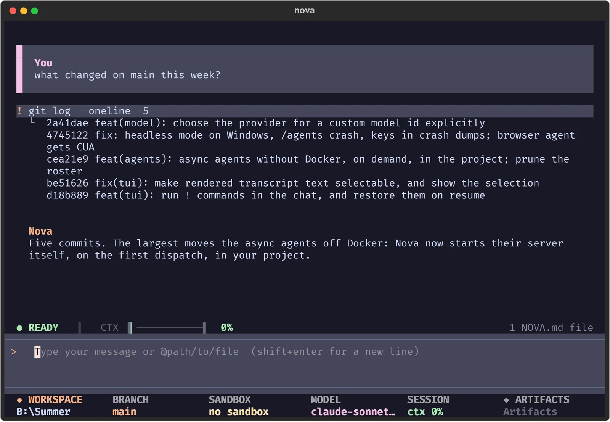

Plans, subagents, tools
Delegate to 4 in-session specialists, or hand long jobs to 9 async agents that Nova runs in the background, in your project, on whatever model the session uses. No Docker needed.
subagents=4 --async=9
Open source, MIT licensed
Nova plans, edits and runs tools in your terminal, then grades the result and retries until it passes.
$ nova --inventory
nova ❯open ideas.book
Planning, delegation, and a way of finding code that does not depend on you remembering what the function was called.
Delegate to 4 in-session specialists, or hand long jobs to 9 async agents that Nova runs in the background, in your project, on whatever model the session uses. No Docker needed.
subagents=4 --async=9
/council has several agents propose plans, critique each other anonymously and vote. A judge picks the top 3 and nothing is built until you approve one.
/research fans a question out to 7 research personas and merges what they find.
5000+
Find code by description, not exact text. A project graph of that many nodes, blast-radius analysis, and full LSP support.
lsp --project-graphA three-stage pipeline sized to the model's real context window. Older tool results are cleared first and kept in /cleared/ so they can be read back, then the conversation is compacted, with an 8k-token reserve always held. A local Tev1 model can choose what is stale instead of clearing by age.
nova ❯open code.book
Every command, diff and approval happens in one place you can read back, select and copy.

!, its output inline, and Nova's answer below it.Automatic .gitignore enforcement, command-injection detection, snapshots before destructive operations with /restore, and approval for anything risky. Sandboxes for OS, Docker, Modal, Runloop, Daytona and LangSmith.
50+ built-in tools and 50+ skills loaded only when needed, 12 MCP presets with collision-free tool names, Python plugins that add slash commands and middleware, and a project wiki at .nova/wiki/.
nova ❯open build.book
Script it, put it in CI, or reach it from your phone. --output-format emits text, json or stream-json, and --deny-tools closes the approval loop so nothing hangs waiting for a human.
Cron schedules, a signed webhook server, and Discord and Telegram bridges all feed the same queue.
# machine-readable output, capped at 10 turns, # tool approvals denied instead of awaited uv run nova -p "run the suite, report failures" \ --output-format json \ --max-turns 10 \ --deny-tools # or pipe the prompt in echo "explain src/main.py" | uv run nova -p
nova ❯open grow.book # the differentiator
Most agents are frozen at whatever their prompt said on release day. Nova runs a verifier out of band, and gets better the more you use it without you tuning anything.
Tool calls, timings and verdicts land in a durable store.
A separate model call scores each task against a rubric.
A failing verdict re-runs the task with the feedback, up to three times.
Repeated mistakes become a skill and a tuned prompt, permanently.
nova ❯cat INSTALL.md
Python 3.11 or newer. Nothing is installed globally.
git clone https://github.com/Babitdor/NovaCode.gitcd NovaCode && uv syncuv run novagit clone https://github.com/Babitdor/NovaCode.gitcd NovaCode; uv syncuv run novauv tool install --from git+https://github.com/Babitdor/NovaCode.git novacode-clinovaVoice input and output is optional and adds about 2 GB: uv pip install -e '.[voice]'
nova ❯man nova
No. uv run nova runs the current code straight from the repo, so there are no stale copies and no PATH juggling. Add the repo's .venv to your PATH if you want a bare nova command anywhere.
OpenAI, Anthropic, Google Gemini, NVIDIA, OpenRouter, OpenCode, and local Ollama. Switch from the /model picker, including any model id a provider has not listed yet. Reasoning effort changes without a restart via /effort.
That is what it is tuned for. Status updates repaint in place, rendered Markdown is cached, subagents compile on first use, and garbage collection runs while you are idle. Any freeze over one second is logged to ~/.nova/logs/freeze.log.
It stops and asks you, configurable per operation. Headless runs are the exception: --deny-tools rejects everything automatically, so a pipeline fails closed instead of hanging.
Yes. Bridge it to Discord or Telegram. Telegram takes voice notes, gives each session its own forum topic, and deletes a question once you have answered it. A signed webhook lets other systems start a run.
Free, MIT licensed, and it runs on the model and machine you already have.